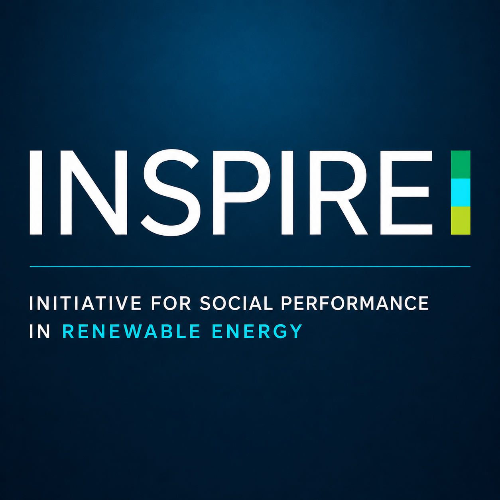

Project
INSPIRE / University of Cape Town
Initiative for Social Performance in Renewable Energy
Research community governance, local participation and social performance in renewable energy projects in South Africa.
Partners: INSPIRE, University of Cape Town (UCT), TRAJECTS

Details
- Scope
- Research on Community Trusts at REIPPPP, community governance, local participation and energy justice.
- Deliveries
- Institutional analysis, local engagement tools, intercultural communication and strategic visual guide on energy justice.
- Poster
- The TRAJECTS library includes the Estancia de Investigación Junior 2025 poster collection, with Ramón Brito among the researchers listed.